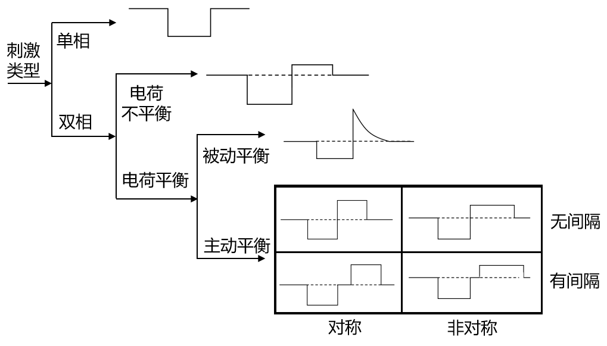
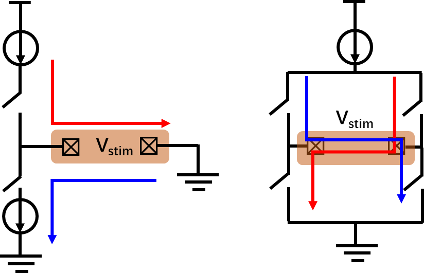
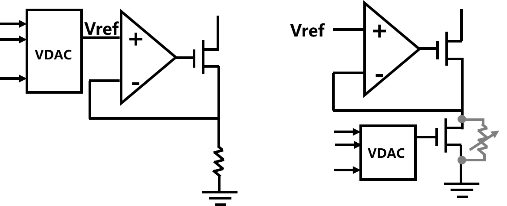
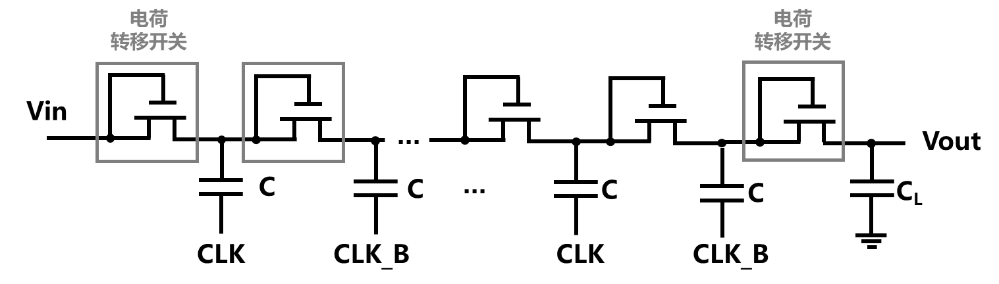

刺激电路
使用电刺激的方式实现对神经元兴奋或抑制的调控，是脑疾病治疗中最常见且重要的功能之一[91]。这种功能被广泛应用于脑机接口设备中，用于治疗各种脑部疾病和恢复功能。例如，深部脑刺激（deep brain stimulation，DBS）就被应用在帕金森的治疗上[92]，而视皮层刺激被证明可以帮助盲人实现部分视觉恢复[93, 94]。
常用刺激波形
根据刺激方式的不同，植入式电刺激器主要分为电压控制输出和电流控制输出两种方式。在电压控制的刺激器中，用于产生电刺激的两个电极之间存在刺激电压，刺激电路的输出受到组织和电极之间的阻抗影响。然而，电极与组织之间的阻抗模型是不稳定的，并且会随着刺激过程而变化。因此，在单个刺激周期内，注入到组织中的电荷无法均匀释放。当剩余电荷积累到阈值时，可能会对神经组织造成无法预测的损害。在电流控制刺激中，注入组织的电荷可以由电流模式数模转换器 (DAC) 控制。 通过设置刺激器的振幅和时间，可以精确的控制电荷的注入情况。电流控制输出不受组织负载变化的影响，可对输出到组织中的电荷量进行监控，较电压控制输出而言安全性更加在实际应用中。因此，电流控制输出更为常见。

图8-31 不同刺激方式示意图
如图8-31所示，根据刺激方式的不同，刺激方式可以分为单相（monophasic）和双相刺激（biphasic）。在单相刺激中，电荷的积累可能会导致组织损伤并对影响电极使用寿命。因此，更常用的是双相电流刺激，通过控制电流刺激方向，可以补偿大部分电荷，避免组织损伤和电极损坏的发生[95]。典型的双相刺激波形具备可调的电流强度、脉冲宽度以及刺激间隔。根据刺激脑位置和电极的不同，电流强度一般在10uA至1mA，刺激电压则在2V至10V之间。
在双相刺激中，可采用如图8-32所示的单极（monopolar）或双极（bipolar）电极配置方式。单极刺激使用单个工作电极，利用一对电流源和电流沉产生正相和负相两个阶段的刺激。在双极刺激中，正相和负相两个阶段的刺激由桥式电路控制电流源或电流沉电流在一对电极间的流动方向来产生。在高密度电极阵列中，常采用单极刺激方式，而双极刺激则具有更好的定向刺激效果。

图8-32 单极和双极电神经刺激器的简化示意图
神经刺激电路
在脑机接口中，刺激器电路主要包括控制器、数模转换器（DAC）、电流驱动器和升压电路等部分。神经刺激器的输出电流通常由微控制器单元（MCU）或状态机等数字控制模块控制。数字模拟转换器（DAC）将数字信号转换为参考模拟信号，供后续的电流驱动器使用。DAC的输出位数决定了神经刺激器输出电流的精度，一般根据刺激电流的动态范围和跨度进行设计。电流驱动器用于将DAC输出的参考模拟信号转换为刺激器所需的电流输出。如图8-33中所示，神经刺激电路中可采用一对源-沉电流驱动对或者带有H桥的单一电流驱动器来完成单极或双极刺激。电流驱动器需要具有较高的输出阻抗以及高电压兼容性。高输出阻抗可确保刺激器能够有效地将电流传输到不同的负载阻抗。高电压兼容性（high voltage compliance）可保证刺激器在传递所需电流的同时，能够适应负载阻抗的变化，不会导致输出电压达到其限制，确保稳定的电流输出。由于深亚微米工艺的影响，植入式芯片的电压往往无法满足神经刺激的要求，因此需要升压电路来提供系统所需的高电压。
图8-33典型神经刺激器框图
神经刺激电流中常采用的是基于电流源的数模转换器。图8-34展示了一个6位的DAC电路，图中的B0-B5为数字控制码，利用晶体管的宽长比来获得不同大小的电流。通过上拉信号U、下拉信号D以及数字控制码的控制电流方向和大小，电极上可产生所需的刺激电流，Vbp和Vbn为数模转换器的偏置电压，用于产生基准电流[96]。
图8-34 6位数模转换器电路示意图
通过电流镜配合DAC输出是刺激器电路中常用的方法。图8-35中展示了利用单管MOS电流镜、共源共栅电流镜以及宽摆幅电流镜的神经刺激电路。单管电流镜的主要问题是输出阻抗较低，采用共源共栅或宽摆幅电流镜虽然较大程度的提高了输出阻抗，但是摆幅均存在不同程度的降低，影响高电压兼容性[97]。除此之外，还可以采用电压-电流转换的方式产生所需刺激电流。图8-36中，利用跨导放大器负反馈可以形成一个简单的电流驱动器，电压型DAC控制Vref或者控制处于线性区的可变电阻实现对刺激电流的控制[98]。采用图8-36的方式可显著提高输出阻抗，但是输出电流线性度易受到线性区工作晶体管的影响。
图8-35 电流模式数模转换器控制电流镜用于神经刺激
电流微刺激

图8-36 通过电压-电流转换实现神经电刺激
电荷泵电路被广泛应用于刺激器电路中，以产生高直流供电电压并向组织输送所需的足够电流[99]。图8-37所示是一个N级电荷泵电路的示意图，主要包括电容、电荷传输开关（charge transfer switch，CTS）。其中每个第i级由一个CTS和电容C组成，最后一对CTS和电容CL构成了输出级[100]。电荷泵利用周期性信号CLK与CLK_B的控制来实现对电容的充电，间接地将电荷从一个电容器传递至另一个电容并在过程中不断积累电荷，从而使得输出电压升高。CTS的主要作用是将电荷不可逆的从输入传输至输出，CTS的设计是不同类型电荷泵的主要差异所在[101]。

图8-37 通过电压-电流转换实现神经电刺激
电荷平衡
在现实应用中，确保双相刺激中正负两相的总电荷量相等，以实现刺激电荷的平衡非常重要。尽管可以通过时钟来控制两相刺激，但如果刺激过程没有进行校准，阳极和阴极电流之间仍然存在一定误差。如果刺激器在短时间内进行大量的高负荷刺激，这种误差将会被迅速放大，导致大量的电荷积累。为了避免这种情况，通常在刺激电极上串联一个隔离电容器，以限制总的刺激电荷量[102]。为了保证刺激器的输出电压范围，隔离电容值一般较大。在功能性电刺激中，隔离电容器的容量通常在几十纳法到几微法之间，物理尺寸较大，难以在芯片上集成[98]。
除了采用隔离电容方法外，还可以在刺激过程中对两相刺激电流进行匹配和校准。如果电流匹配不足以实现净零电荷要求，可使用额外的放电阶段来去除残余电荷。被动放电直接简单地将刺激电极接地或连接到公共或参考电极。被动放电的缺点是放电电流取决于负载和电极阻抗，无法很好地控制。如果阻抗太低，放电电流容易过高，有损坏组织的可能，因此需要额外的电流限制电路；如果阻抗太高，放电时间久，残余电荷可能无法在下次刺激之前完全清除。
参考文献
[1] U. Chaudhary, N. Birbaumer, and A. Ramos-Murguialday, "Brain–computer interfaces for communication and rehabilitation," Nature Reviews Neurology, vol. 12, no. 9, pp. 513-525, 2016.
[2] L. Kuhlmann, K. Lehnertz, M. P. Richardson, B. Schelter, and H. P. Zaveri, "Seizure prediction—ready for a new era," Nature Reviews Neurology, vol. 14, no. 10, pp. 618-630, 2018.
[3] G. Schalk and E. C. Leuthardt, "Brain-computer interfaces using electrocorticographic signals," IEEE reviews in biomedical engineering, vol. 4, pp. 140-154, 2011.
[4] E. C. Leuthardt, G. Schalk, J. Roland, A. Rouse, and D. W. Moran, "Evolution of brain-computer interfaces: going beyond classic motor physiology," Neurosurgical focus, vol. 27, no. 1, p. E4, 2009.
[5] H. Wu, J. Chen, X. Liu, W. Zou, J. Yang, and M. Sawan, "An Energy-Efficient Small-Area Configurable Analog Front-End Interface for Diverse Biosignals Recording," IEEE Transactions on Biomedical Circuits and Systems, 2023.
[6] I. H. Stevenson and K. P. Kording, "How advances in neural recording affect data analysis," Nature neuroscience, vol. 14, no. 2, pp. 139-142, 2011.
[7] C. M. Lopez et al., "A Neural Probe with Up to 966 Electrodes and Up to 384 Configurable Channels in 0.13um SOI CMOS," IEEE transactions on biomedical circuits and systems, vol. 11, no. 3, pp. 510-522, 2017.
[8] E. Musk, "An integrated brain-machine interface platform with thousands of channels," Journal of medical Internet research, vol. 21, no. 10, p. e16194, 2019.
[9] C. M. Lopez and X. Huang, "Circuits and Architectures for Neural Recording Interfaces," in Biomedical Electronics, Noise Shaping ADCs, and Frequency References: Advances in Analog Circuit Design 2022: Springer, 2023, pp. 45-57.
[10] A. Bagheri, M. T. Salam, J. L. P. Velazquez, and R. Genov, "Low-frequency noise and offset rejection in DC-coupled neural amplifiers: A review and digitally-assisted design tutorial," IEEE transactions on biomedical circuits and systems, vol. 11, no. 1, pp. 161-176, 2016.
[11] R. R. Harrison and C. Charles, "A low-power low-noise CMOS amplifier for neural recording applications," IEEE Journal of solid-state circuits, vol. 38, no. 6, pp. 958-965, 2003.
[12] J. Xu, S. Mitra, C. Van Hoof, R. F. Yazicioglu, and K. A. Makinwa, "Active electrodes for wearable EEG acquisition: Review and electronics design methodology," IEEE reviews in biomedical engineering, vol. 10, pp. 187-198, 2017.
[13] B. Gosselin, M. Sawan, and C. A. Chapman, "A low-power integrated bioamplifier with active low-frequency suppression," IEEE Transactions on biomedical circuits and systems, vol. 1, no. 3, pp. 184-192, 2007.
[14] K. A. Ng and P. K. Chan, "A CMOS analog front-end IC for portable EEG/ECG monitoring applications," IEEE Transactions on Circuits and Systems I: Regular Papers, vol. 52, no. 11, pp. 2335-2347, 2005.
[15] R. Muller, S. Gambini, and J. M. Rabaey, "A 0.013${\hbox {mm}}^{2} $, 5$\mu\hbox {W} $, DC-Coupled Neural Signal Acquisition IC With 0.5 V Supply," IEEE Journal of Solid-State Circuits, vol. 47, no. 1, pp. 232-243, 2011.
[16] C. C. Enz and G. C. Temes, "Circuit techniques for reducing the effects of op-amp imperfections: autozeroing, correlated double sampling, and chopper stabilization," Proceedings of the IEEE, vol. 84, no. 11, pp. 1584-1614, 1996.
[17] T. Denison, K. Consoer, W. Santa, A.-T. Avestruz, J. Cooley, and A. Kelly, "A 2 $\mu\hbox{W}$ 100 nV/rtHz Chopper-Stabilized Instrumentation Amplifier for Chronic Measurement of Neural Field Potentials," IEEE Journal of Solid-State Circuits, vol. 42, no. 12, pp. 2934-2945, 2007, doi: 10.1109/jssc.2007.908664.
[18] C.-Y. Wu, C.-H. Cheng, and Z.-X. Chen, "A 16-channel CMOS chopper-stabilized analog front-end ECoG acquisition circuit for a closed-loop epileptic seizure control system," IEEE transactions on biomedical circuits and systems, vol. 12, no. 3, pp. 543-553, 2018.
[19] E. Greenwald et al., "A Bidirectional Neural Interface IC With Chopper Stabilized BioADC Array and Charge Balanced Stimulator," IEEE Trans Biomed Circuits Syst, vol. 10, no. 5, pp. 990-1002, Oct 2016, doi: 10.1109/TBCAS.2016.2614845.
[20] B. Gosselin, "Recent advances in neural recording microsystems," Sensors, vol. 11, pp. 4572-4597, 2011.
[21] B. Razavi, Design of analog CMOS integrated circuits. 清华大学出版社有限公司, 2005.
[22] M. S. Chae, W. Liu, and M. Sivaprakasam, "Design optimization for integrated neural recording systems," IEEE Journal of Solid-State Circuits, vol. 43, no. 9, pp. 1931-1939, 2008.
[23] D. De Dorigo et al., "Fully immersible subcortical neural probes with modular architecture and a delta-sigma ADC integrated under each electrode for parallel readout of 144 recording sites," IEEE Journal of Solid-State Circuits, vol. 53, no. 11, pp. 3111-3125, 2018.
[24] H. Chandrakumar and D. Marković, "A 15.2-ENOB 5-kHz BW 4.5-$\mu $ W Chopped CT $\Delta\Sigma $-ADC for Artifact-Tolerant Neural Recording Front Ends," IEEE Journal of Solid-State Circuits, vol. 53, no. 12, pp. 3470-3483, 2018.
[25] S. Pavan, R. Schreier, and G. C. Temes, Understanding delta-sigma data converters. John Wiley & Sons, 2017.
[26] J. Chen, M. Tarkhan, H. Wu, F. H. Noshahr, J. Yang, and M. Sawan, "Recent trends and future prospects of neural recording circuits and systems: A tutorial brief," IEEE Transactions on Circuits and Systems II: Express Briefs, vol. 69, no. 6, pp. 2654-2660, 2022.
[27] F. Hashemi Noshahr, M. Nabavi, and M. Sawan, "Multi-channel neural recording implants: A review," sensors, vol. 20, no. 3, p. 904, 2020.
[28] D.-Y. Yoon, S. Pinto, S. Chung, P. Merolla, T.-W. Koh, and D. Seo, "A 1024-channel simultaneous recording neural SoC with stimulation and real-time spike detection," in 2021 Symposium on VLSI Circuits, 2021: IEEE, pp. 1-2.
[29] C. M. Lopez et al., "An implantable 455-active-electrode 52-channel CMOS neural probe," IEEE Journal of Solid-State Circuits, vol. 49, no. 1, pp. 248-261, 2013.
[30] S.-Y. Park et al., "A miniaturized 256-channel neural recording interface with area-efficient hybrid integration of flexible probes and CMOS integrated circuits," IEEE Transactions on Biomedical Engineering, vol. 69, no. 1, pp. 334-346, 2021.
[31] N. S. K. Fathy, J. Huang, and P. P. Mercier, "A digitally assisted multiplexed neural recording system with dynamic electrode offset cancellation via an LMS interference-canceling filter," IEEE Journal of Solid-State Circuits, vol. 57, no. 3, pp. 953-964, 2021.
[32] J. P. Uehlin, W. A. Smith, V. R. Pamula, S. I. Perlmutter, J. C. Rudell, and V. S. Sathe, "A 0.0023 mm $^ 2$/ch. Delta-Encoded, Time-Division Multiplexed Mixed-Signal ECoG Recording Architecture With Stimulus Artifact Suppression," IEEE transactions on biomedical circuits and systems, vol. 14, no. 2, pp. 319-331, 2019.
[33] N. Pérez-Prieto, Á. Rodríguez-Vázquez, M. Álvarez-Dolado, and M. Delgado-Restituto, "A 32-channel time-multiplexed artifact-aware neural recording system," IEEE Transactions on Biomedical Circuits and Systems, vol. 15, no. 5, pp. 960-977, 2021.
[34] M. Sharma, H. J. Strathman, and R. M. Walker, "Verification of a rapidly multiplexed circuit for scalable action potential recording," IEEE transactions on biomedical circuits and systems, vol. 13, no. 6, pp. 1655-1663, 2019.
[35] C. Kim, S. Joshi, H. Courellis, J. Wang, C. Miller, and G. Cauwenberghs, "Sub-$\mu $ V rms-Noise Sub-$\mu $ W/Channel ADC-Direct Neural Recording With 200-mV/ms Transient Recovery Through Predictive Digital Autoranging," IEEE Journal of Solid-State Circuits, vol. 53, no. 11, pp. 3101-3110, 2018.
[36] H. Kassiri et al., "Rail-to-rail-input dual-radio 64-channel closed-loop neurostimulator," IEEE Journal of Solid-State Circuits, vol. 52, no. 11, pp. 2793-2810, 2017.
[37] S. Zhao, C. Fang, J. Yang, and M. Sawan, "Emerging energy-efficient biosignal-dedicated circuit techniques: A tutorial brief," IEEE Transactions on Circuits and Systems II: Express Briefs, vol. 69, no. 6, pp. 2592-2597, 2022.
[38] S. Gibson, J. W. Judy, and D. Marković, "Spike sorting: The first step in decoding the brain: The first step in decoding the brain," IEEE Signal processing magazine, vol. 29, no. 1, pp. 124-143, 2011.
[39] R. G. Baraniuk, "Compressive sensing [lecture notes]," IEEE signal processing magazine, vol. 24, no. 4, pp. 118-121, 2007.
[40] M. Shoaran, M. H. Kamal, C. Pollo, P. Vandergheynst, and A. Schmid, "Compact low-power cortical recording architecture for compressive multichannel data acquisition," IEEE transactions on biomedical circuits and systems, vol. 8, no. 6, pp. 857-870, 2014.
[41] X. Liu et al., "A fully integrated wireless compressed sensing neural signal acquisition system for chronic recording and brain machine interface," IEEE Transactions on biomedical circuits and systems, vol. 10, no. 4, pp. 874-883, 2016.
[42] T. Wu, W. Zhao, H. Guo, H. H. Lim, and Z. Yang, "A streaming PCA VLSI chip for neural data compression," IEEE transactions on biomedical circuits and systems, vol. 11, no. 6, pp. 1290-1302, 2017.
[43] T. E. Özkurt et al., "High frequency oscillations in the subthalamic nucleus: a neurophysiological marker of the motor state in Parkinson's disease," Experimental neurology, vol. 229, no. 2, pp. 324-331, 2011.
[44] J. Jacobs et al., "High-frequency oscillations (HFOs) in clinical epilepsy," Progress in neurobiology, vol. 98, no. 3, pp. 302-315, 2012.
[45] M. X. Cohen, Analyzing neural time series data: theory and practice. MIT press, 2014.
[46] J. Yoo, L. Yan, D. El-Damak, M. A. B. Altaf, A. H. Shoeb, and A. P. Chandrakasan, "An 8-channel scalable EEG acquisition SoC with patient-specific seizure classification and recording processor," IEEE journal of solid-state circuits, vol. 48, no. 1, pp. 214-228, 2012.
[47] L. Guo, D. Rivero, J. Dorado, J. R. Rabunal, and A. Pazos, "Automatic epileptic seizure detection in EEGs based on line length feature and artificial neural networks," Journal of neuroscience methods, vol. 191, no. 1, pp. 101-109, 2010.
[48] R. B. Duckrow and T. K. Tcheng, "Daily variation in an intracranial EEG feature in humans detected by a responsive neurostimulator system," Epilepsia, vol. 48, no. 8, pp. 1614-1620, 2007.
[49] F. Mormann, K. Lehnertz, P. David, and C. E. Elger, "Mean phase coherence as a measure for phase synchronization and its application to the EEG of epilepsy patients," Physica D: Nonlinear Phenomena, vol. 144, no. 3-4, pp. 358-369, 2000.
[50] K. Abdelhalim, H. M. Jafari, L. Kokarovtseva, J. L. P. Velazquez, and R. Genov, "64-Channel UWB Wireless Neural Vector Analyzer SOC With a Closed-Loop Phase Synchrony-Triggered Neurostimulator," IEEE Journal of Solid-State Circuits, vol. 48, no. 10, pp. 2494-2510, 2013, doi: 10.1109/jssc.2013.2272952.
[51] Y. Wei et al., "A review of algorithm & hardware design for AI-based biomedical applications," IEEE transactions on biomedical circuits and systems, vol. 14, no. 2, pp. 145-163, 2020.
[52] S.-A. Huang, K.-C. Chang, H.-H. Liou, and C.-H. Yang, "A 1.9-mW SVM processor with on-chip active learning for epileptic seizure control," IEEE Journal of Solid-State Circuits, vol. 55, no. 2, pp. 452-464, 2019.
[53] L. Feng, Z. Li, and Y. Wang, "VLSI design of SVM-based seizure detection system with on-chip learning capability," IEEE transactions on biomedical circuits and systems, vol. 12, no. 1, pp. 171-181, 2017.
[54] M. A. B. Altaf, C. Zhang, and J. Yoo, "A 16-channel patient-specific seizure onset and termination detection SoC with impedance-adaptive transcranial electrical stimulator," IEEE Journal of Solid-State Circuits, vol. 50, no. 11, pp. 2728-2740, 2015.
[55] M. A. B. Altaf and J. Yoo, "A 1.83$\mu $ J/classification, 8-channel, patient-specific epileptic seizure classification SoC using a non-linear support vector machine," IEEE Transactions on Biomedical Circuits and Systems, vol. 10, no. 1, pp. 49-60, 2015.
[56] K. Abdelhalim, V. Smolyakov, and R. Genov, "Phase-synchronization early epileptic seizure detector VLSI architecture," IEEE transactions on biomedical circuits and systems, vol. 5, no. 5, pp. 430-438, 2011.
[57] M. Shoaib, K. H. Lee, N. K. Jha, and N. Verma, "A 0.6–107 µW energy-scalable processor for directly analyzing compressively-sensed EEG," IEEE Transactions on Circuits and Systems I: Regular Papers, vol. 61, no. 4, pp. 1105-1118, 2014.
[58] K. H. Lee and N. Verma, "A low-power processor with configurable embedded machine-learning accelerators for high-order and adaptive analysis of medical-sensor signals," IEEE Journal of Solid-State Circuits, vol. 48, no. 7, pp. 1625-1637, 2013.
[59] M. Shoaran, B. A. Haghi, M. Taghavi, M. Farivar, and A. Emami-Neyestanak, "Energy-efficient classification for resource-constrained biomedical applications," IEEE Journal on Emerging and Selected Topics in Circuits and Systems, vol. 8, no. 4, pp. 693-707, 2018.
[60] U. Shin et al., "NeuralTree: A 256-Channel 0.227-μJ/Class Versatile Neural Activity Classification and Closed-Loop Neuromodulation SoC," IEEE Journal of Solid-State Circuits, vol. 57, no. 11, pp. 3243-3257, 2022.
[61] B. Zhu, M. Farivar, and M. Shoaran, "Resot: Resource-efficient oblique trees for neural signal classification," IEEE Transactions on Biomedical Circuits and Systems, vol. 14, no. 4, pp. 692-704, 2020.
[62] J. Yang and M. Sawan, "From seizure detection to smart and fully embedded seizure prediction engine: A review," IEEE Transactions on Biomedical Circuits and Systems, vol. 14, no. 5, pp. 1008-1023, 2020.
[63] G. K. Anumanchipalli, J. Chartier, and E. F. Chang, "Speech synthesis from neural decoding of spoken sentences," Nature, vol. 568, no. 7753, pp. 493-498, 2019.
[64] J. Liu et al., "4.5 BioAIP: A Reconfigurable Biomedical AI Processor with Adaptive Learning for Versatile Intelligent Health Monitoring," in 2021 IEEE International Solid-State Circuits Conference (ISSCC), 2021, vol. 64: IEEE, pp. 62-64.
[65] S. Zhao et al., "A 0.99-to-4.38 uJ/class Event-Driven Hybrid Neural Network Processor for Full-Spectrum Neural Signal Analyses," IEEE Transactions on Biomedical Circuits and Systems, 2023.
[66] V. J. Lawhern, A. J. Solon, N. R. Waytowich, S. M. Gordon, C. P. Hung, and B. J. Lance, "EEGNet: a compact convolutional neural network for EEG-based brain–computer interfaces," Journal of neural engineering, vol. 15, no. 5, p. 056013, 2018.
[67] S. Zhao, J. Yang, and M. Sawan, "Energy-efficient neural network for epileptic seizure prediction," IEEE Transactions on Biomedical Engineering, vol. 69, no. 1, pp. 401-411, 2021.
[68] F. Tian, J. Yang, S. Zhao, and M. Sawan, "NeuroCARE: A generic neuromorphic edge computing framework for healthcare applications," Frontiers in Neuroscience, vol. 17, p. 1093865, 2023.
[69] C. Wang, J. Yang, and M. Sawan, "NeuroSEE: A Neuromorphic Energy-Efficient Processing Framework for Visual Prostheses," IEEE Journal of Biomedical and Health Informatics, vol. 26, no. 8, pp. 4132-4141, 2022.
[70] C. Wang, C. Fang, Y. Zou, J. Yang, and M. Sawan, "SpikeSEE: An energy-efficient dynamic scenes processing framework for retinal prostheses," Neural Networks, vol. 164, pp. 357-368, 2023.
[71] C. Fang, C. Wang, S. Zhao, F. Tian, J. Yang, and M. Sawan, "A 510μW 0.738-mm2 6.2-pJ/SOP Online Learning Multi-Topology SNN Processor with Unified Computation Engine in 40-nm CMOS," IEEE Transactions on Biomedical Circuits and Systems, 2023.
[72] J. Yoo and M. Shoaran, "Neural interface systems with on-device computing: Machine learning and neuromorphic architectures," Current opinion in biotechnology, vol. 72, pp. 95-101, 2021.
[73] Y. Yang, J. K. Eshraghian, N. D. Truong, A. Nikpour, and O. Kavehei, "Neuromorphic deep spiking neural networks for seizure detection," Neuromorphic Computing and Engineering, vol. 3, no. 1, p. 014010, 2023.
[74] F. Tian, J. Yang, S. Zhao, and M. Sawan, "A new neuromorphic computing approach for epileptic seizure prediction," in 2021 IEEE International Symposium on Circuits and Systems (ISCAS), 2021: IEEE, pp. 1-5.
[75] G. L. Barbruni, P. M. Ros, D. Demarchi, S. Carrara, and D. Ghezzi, "Miniaturised wireless power transfer systems for neurostimulation: A review," IEEE Transactions on Biomedical Circuits and Systems, vol. 14, no. 6, pp. 1160-1178, 2020.
[76] M. Sawan, Y. Hu, and J. Coulombe, "Wireless smart implants dedicated to multichannel monitoring and microstimulation," IEEE Circuits and systems magazine, vol. 5, no. 1, pp. 21-39, 2005.
[77] R. Muller, M. M. Ghanbari, and A. Zhou, "Miniaturized wireless neural interfaces: A tutorial," IEEE Solid-State Circuits Magazine, vol. 13, no. 4, pp. 88-97, 2021.
[78] Y. Lu and W.-H. Ki, "CMOS integrated circuit design for wireless power transfer," 2018.
[79] S. M. Won, L. Cai, P. Gutruf, and J. A. Rogers, "Wireless and battery-free technologies for neuroengineering," Nature Biomedical Engineering, vol. 7, no. 4, pp. 405-423, 2023.
[80] M. Sawan, Handbook of Biochips: Integrated Circuits and Systems for Biology and Medicine. Springer, 2015.
[81] M. N. Islam and M. R. Yuce, "Review of medical implant communication system (MICS) band and network," Ict Express, vol. 2, no. 4, pp. 188-194, 2016.
[82] G. Simard, M. Sawan, and D. Massicotte, "High-speed OQPSK and efficient power transfer through inductive link for biomedical implants," IEEE Transactions on biomedical circuits and systems, vol. 4, no. 3, pp. 192-200, 2010.
[83] F. Mounaim and M. Sawan, "Integrated high-voltage inductive power and data-recovery front end dedicated to implantable devices," IEEE Transactions on Biomedical Circuits and Systems, vol. 5, no. 3, pp. 283-291, 2011.
[84] L. Yang and G. B. Giannakis, "Ultra-wideband communications: an idea whose time has come," IEEE signal processing magazine, vol. 21, no. 6, pp. 26-54, 2004.
[85] H. Ando, K. Takizawa, T. Yoshida, K. Matsushita, M. Hirata, and T. Suzuki, "Wireless multichannel neural recording with a 128-Mbps UWB transmitter for an implantable brain-machine interfaces," IEEE transactions on biomedical circuits and systems, vol. 10, no. 6, pp. 1068-1078, 2016.
[86] M. S. Chae, Z. Yang, M. R. Yuce, L. Hoang, and W. Liu, "A 128-channel 6 mW wireless neural recording IC with spike feature extraction and UWB transmitter," IEEE transactions on neural systems and rehabilitation engineering, vol. 17, no. 4, pp. 312-321, 2009.
[87] M. Song et al., "A 1.66 Gb/s and 5.8 pJ/b transcutaneous IR-UWB telemetry system with hybrid impulse modulation for intracortical brain-computer interfaces," in 2022 IEEE International Solid-State Circuits Conference (ISSCC), 2022, vol. 65: IEEE, pp. 394-396.
[88] G. Lee, S. Lee, J.-H. Kim, and T. W. Kim, "21.1 A 1.125 Gb/s 28mW 2m-Radio-Range IR-UWB CMOS Transceiver," in 2021 IEEE International Solid-State Circuits Conference (ISSCC), 2021, vol. 64: IEEE, pp. 302-304.
[89] N.-S. Kim and J. M. Rabaey, "A high data-rate energy-efficient triple-channel UWB-based cognitive radio," IEEE Journal of Solid-State Circuits, vol. 51, no. 4, pp. 809-820, 2016.
[90] E. Allebes et al., "21.2 A 3-to-10GHz 180pJ/b IEEE802. 15.4 z/4a IR-UWB coherent polar transmitter in 28nm CMOS with asynchronous amplitude pulse-shaping and injection-locked phase modulation," in 2021 IEEE International Solid-State Circuits Conference (ISSCC), 2021, vol. 64: IEEE, pp. 304-306.
[91] S. M. Won, E. Song, J. T. Reeder, and J. A. Rogers, "Emerging modalities and implantable technologies for neuromodulation," Cell, vol. 181, no. 1, pp. 115-135, 2020.
[92] P. Limousin and T. Foltynie, "Long-term outcomes of deep brain stimulation in Parkinson disease," Nature Reviews Neurology, vol. 15, no. 4, pp. 234-242, 2019.
[93] A. N. Foroushani, C. C. Pack, and M. Sawan, "Cortical visual prostheses: from microstimulation to functional percept," Journal of neural engineering, vol. 15, no. 2, p. 021005, 2018.
[94] J. Coulombe, M. Sawan, and J.-F. Gervais, "A highly flexible system for microstimulation of the visual cortex: Design and implementation," IEEE transactions on biomedical circuits and systems, vol. 1, no. 4, pp. 258-269, 2007.
[95] D. R. Merrill, M. Bikson, and J. G. Jefferys, "Electrical stimulation of excitable tissue: design of efficacious and safe protocols," Journal of neuroscience methods, vol. 141, no. 2, pp. 171-198, 2005.
[96] H. Kassiri et al., "Rail-to-Rail-Input Dual-Radio 64-Channel Closed-Loop Neurostimulator," IEEE Journal of Solid-State Circuits, pp. 1-18, 2017, doi: 10.1109/jssc.2017.2749426.
[97] M. Ghovanloo and K. Najafi, "A compact large voltage-compliance high output-impedance programmable current source for implantable microstimulators," IEEE Transactions on Biomedical Engineering, vol. 52, no. 1, pp. 97-105, 2004.
[98] X. Liu, A. Demosthenous, and N. Donaldson, "An integrated implantable stimulator that is fail-safe without off-chip blocking-capacitors," IEEE Transactions on Biomedical Circuits and Systems, vol. 2, no. 3, pp. 231-244, 2008.
[99] W.-M. Chen et al., "A fully integrated 8-channel closed-loop neural-prosthetic CMOS SoC for real-time epileptic seizure control," IEEE journal of solid-state circuits, vol. 49, no. 1, pp. 232-247, 2013.
[100] J. F. Dickson, "On-chip high-voltage generation in MNOS integrated circuits using an improved voltage multiplier technique," IEEE Journal of solid-state circuits, vol. 11, no. 3, pp. 374-378, 1976.
[101] A. Ballo, A. D. Grasso, and G. Palumbo, "A review of charge pump topologies for the power management of IoT nodes," Electronics, vol. 8, no. 5, p. 480, 2019.
[102] M. Bugbee, N. de N Donaldson, A. Lickel, N. Rijkhoff, and J. Taylor, "An implant for chronic selective stimulation of nerves," Medical engineering & physics, vol. 23, no. 1, pp. 29-36, 2001.